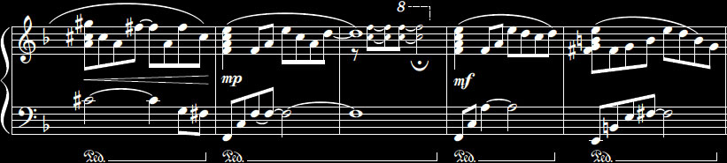
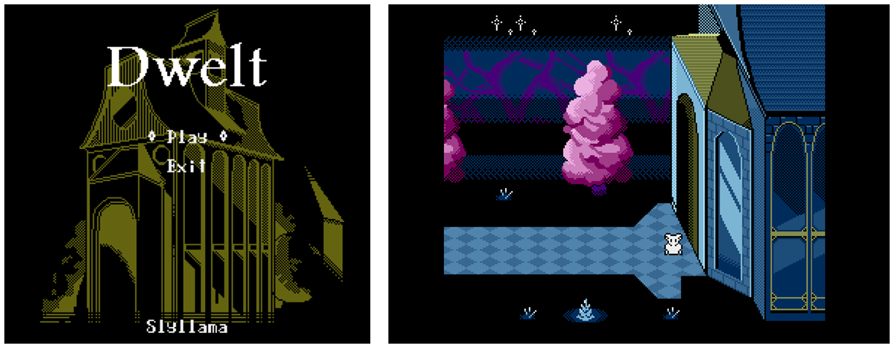
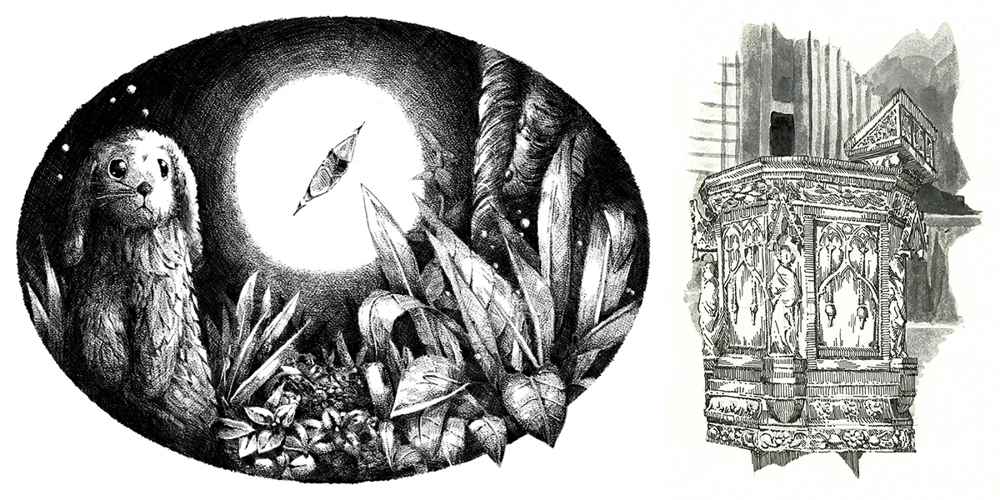
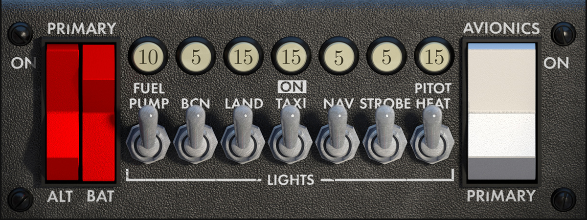
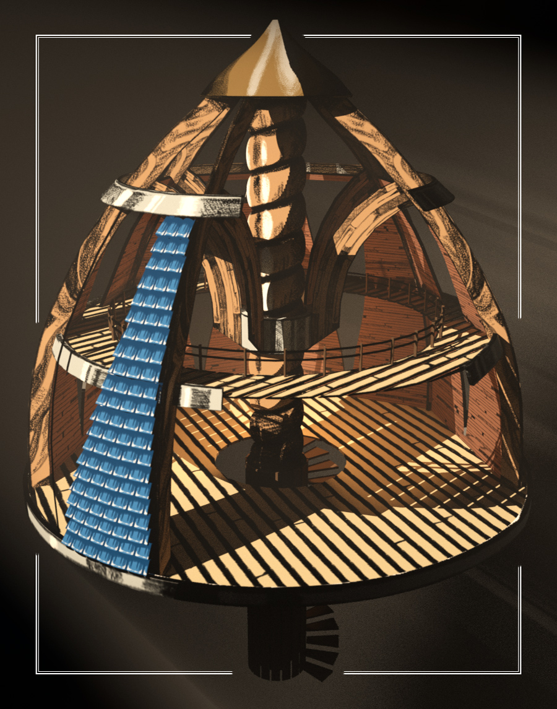

Alex Laing
alex [dot] laing [at] me [dot com]
Hullo! I’m Alex, 23 (@slyllama); a graphic artist and industrial component modeller from New Zealand, a place where a strange yellow object comes to greet us in the sky about twice a year.
For some reason I have a Masters’ in architecture, and I’ve also been taking piano exams, as I can’t decide between the two. (One day I’ll either make a house that plays music, or a song that surrounds you like a cottage.) Knitting is also pretty neat.
* * *

I love piano, and I especially love jazz. I took classical and jazz exams, so I like to mix the two. I get a fair amount of transcription practice because I try to write down what I have improvised. Although I mainly record solo piano, I also use a cool little synthesiser, and I find it fun to make tunes on FamiTracker.
Here is some of the music that I have written:
“Osier” – a video game idea.
“Tumble” – a therapy piece.
(And stuff like this is also fun.)
* * *
I have helped other people with their games, and I did think about making one for a while. My experience is with Godot, but my boss has taught me to pick up new tools quickly, and to pretend that I know what I am doing with them.

I also draw while I listen to music. I enjoy pixel art, as well as working with a graphics tablet, but doing ink-and-washes calms you down like nothing else.

I go to work and make models, and then come home and make models. Another cathartic little thing.

A little side project for a flight simulator!

Something for a thesis. Both of these were done in Blender.
* * *
I really love seeing worlds be made and shared, and I would always look for the opportunity to see if I can help people achieve those sorts of things. Five years in university – and four in a high-pressure job – have taught me to receive and follow a brief, adding my own thoughts and imagination only as necessary, to contribute things that are (hopefully) as complete and as useful as possible.
Alex Laing
alex [dot] laing [at] me [dot com]